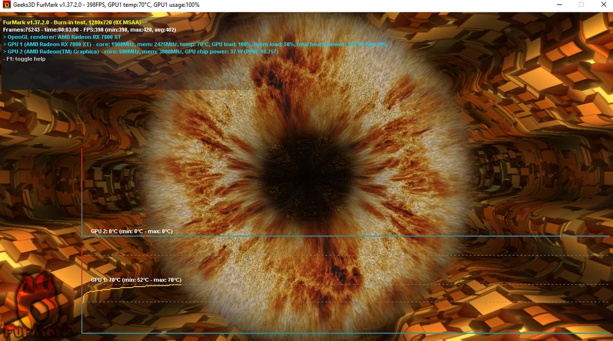

Published: July 3, 2025 • Estimated Read Time: 5 min
FurMark is a GPU stress testing and benchmarking utility used by gamers, overclockers, and PC technicians to evaluate GPU stability and thermal performance.
📥 Step 1: Download FurMark
- Visit the official FurMark page: https://geeks3d.com/furmark/
- Click on the download link for the latest version.
- Save the installer to your computer.
🛠 Step 2: Install FurMark
- Locate the downloaded
.exefile. - Double-click to launch the installer.
- Accept the license and follow the setup wizard.
- Click Finish once completed.
🚀 Step 3: Run FurMark
- Open FurMark from your Start Menu or Desktop.
- Right-click and choose Run as administrator.
- Select your test resolution and click GPU Stress Test.
✅ Tips for Safe Testing
- Keep an eye on GPU temperature throughout the test.
- Do not run stress tests for more than 10 minutes.
- Ensure proper airflow and close other programs before testing.
🎬 Watch the Installation Video
FurMark is an excellent utility for quickly testing your GPU’s limits. Always use it responsibly and monitor your temperatures closely. For more PC tuning tools and tutorials, explore the rest of Tech Hub.